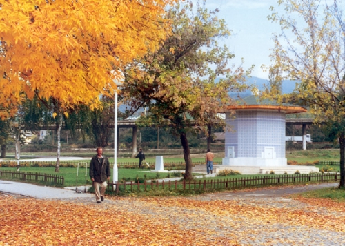
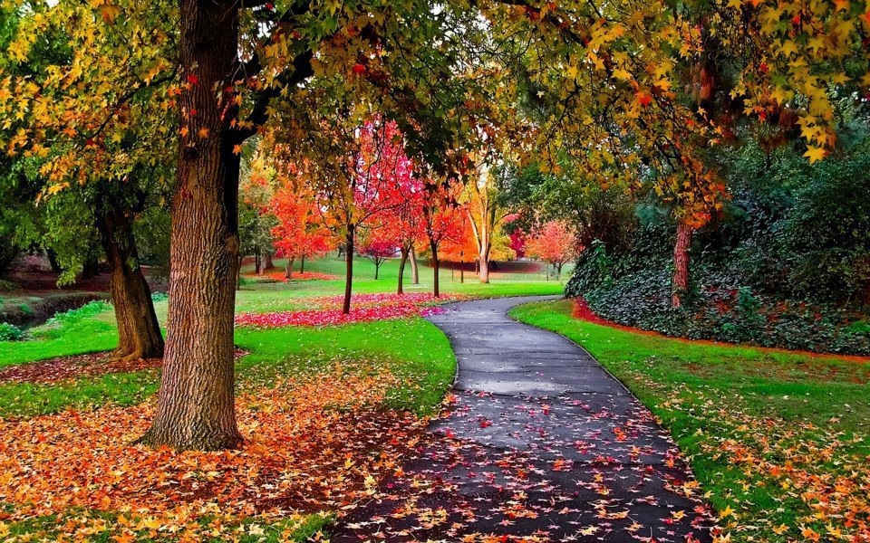

Kamberovica polje

Kamberovića polje is one of Zenica's central urban units located on the river Bosna.
The location of the sports park also hosts circuses and amusement parks.
Thousands of Zenica residents gather at dawn every March 21 on Kamberovića field to celebrate the first day of
spring with an event called Čimburijada.
Through various sports and recreational facilities, the Kamberović field is very popular with the people of Zenica
and their guests. In addition to promenades, children's playgrounds, there are also tennis, chess, aero-modeling, volleyball, handball, basketball, football, rugby and athletic facilities.
The European B-Cup in Athletics 2007 was held at the Athletic Stadium on Kamberovića polje, which is architecturall
y the most beautiful and most functional building of this nature in Bosnia and Herzegovina.
Kamberovica Park is adorned with dedicated steel sculptures made during the Zenica Art Colony in the 1980s, and
the Turkish Park is known for the Turkish Fountain built with a donation from the Turkish government at the end
of the last century. Kamberovića Park was once a place of large gatherings and events where up to 100 thousand
participants gathered. In the past, it was also possible to relax with a carriage ride or ride a hired horse
from the nearby town stables on the Kamberović plain. Smaller planes sometimes landed on Kamberović's plane a
long time ago. However, this slightly elevated plain measuring 900 x 150 meters has never managed to establish
itself in sports or dedicated aviation, and the stud farm there is an irreversible victim of the past war. The
largest Zenica elementary school, Mak Dizdar, is located on Kamberovića Ravna, and this area now hosts
the Football Sports Center of FIFA and UEFA with all the accompanying facilities.
